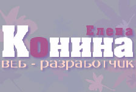
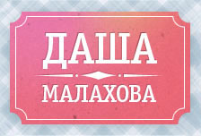
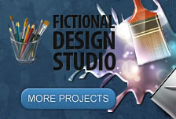
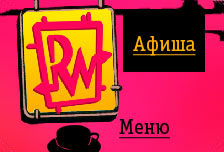

веб-разработчик
Мои работы
-

«Конина Елена - веб-разработчик»
Code on GitHub Сайт сделан для демонстрации моих возможностей в качестве верстальщика, а также умения программирования поведения элементов html-документов на javascript. Макет сайта разработан мной в презентационных целях.
Примененные технологии:
- при верстке страниц сайта была применена методология BEM;
- меню страниц и горизонтальное и вертикальное сверстано идентично, представление на страницах определяется классом, описанным в таблице стилей;
- декоративные полукружья для элементов вертикального меню выполнены генерируемыми элементами с заданием
border-radiusдля верхней границы элемента, для IE8 & IE7 используется встроенное в css изображение в base64; - контакты в подвале страниц сверстаны с применением микроформата hcard, можно посмотреть с помощью Microformats for Google Chrome™
- буллиты элементов списка на страницах выполнены с помощью генерируемых элементов, содержащих Unicode сharacter 'RIGHT HALF BLACK CIRCLE' (U+25D7), для IE8 используется встроенное в css изображение в base64, а для IE7 дополнительно подгружается изображение;
- для страницы Мои работы разработан сценарий, меняющий представление страницы с минималистического - только изображения работ, доступные для перехода на соответствующую страницу по клику; на развернутое - где доступно описание проделанной работы;
- для страницы Моя история применены css-правила
column-count,column-gap,column-rule, а для браузеров, не поддерживающих эти правила использован Columnizer jQuery Plugin, разработанный Adam Wulf; - на странице Мои контакты фоном служит фотография с видом на ул.Остоженка, для эффекта отражения (в современныъх браузерах) используется генерируемые элементы с перевернутым фоном с помощью правил:
transform: scaleX(-1);
background-size: cover; - на всех страницах декоративные элементы выполнены в основном на холсте -
canvas; - для IE, не поддерживающего css-правило
text-shadow, использован jQuery-Plugin-Text-Shadow.
-

«Даша Малахова»
Code on GitHub Страница была сверстана в рамках обучения в Школе верстки Яндекса. Макет предоставлен организаторами. Верстка не поддерживает IE < 8
Примененные технологии:
- верстка независимыми блоками по методологии BEM;
- в рамках стратегии минимизации изображений логотип выполнен с помощью двух изображений: в формате *.jpg, переданного в html-коде, и *.png - фоном в таблице стилей. Кроме этого, если в результате ошибки загрузка изображений будет не успешной, то логотип сайта дублирован заголовком, стилизованным css-правилами, который буквально всплывет из-за границ общего контейнера - div.b-logo;
- выпадающее меню оформлено ребристой окантовкой, меняющей цвет в зависимости от пункта меню. Для представления окантовки использованы встроенные в css изображения в кодировке base64;
- все контуры элементов с обратным скруглением выполнены с помощью
border-image, а для браузеров, не поддерживающих это правило, описанoutlineкак нейтральное свойство, не влияющее на боксовую модель элемента. Только подпись к слайду рецепта, как самый визуально значимый элемент декора, выполнен с добавлением генерируемого контента по границам вверху и внизу элемента, фоном для которых загружаются дополнительные изображения со скругленными внутрь уголками; - код слайдшоу рецептов генерируется сценарием в зависимости от данных, полученных из небольшой базы данных, на требуемую дату из списка: 'сегодня', 'вчера', 'позавчера';
- для выравнивания фона для дат списка по высоте и по продольной оси применены правила:
background-position-x: 50%;
background-position-y: 0;
background-size: 100% 100%; - изображения для статей разделов выполнены доступными для перехода по клику на страницу с соответствующей статьей: в коде изображения являются дочерними для ссылки, вложенной в заголовок, сами изображения абсолютно позиционируются относительно контейнера раздела, а раздел, в свою очередь, предусматривает высоту верхнего поля, равную высоте изображения;
- советы в правой колонке подгружаются ajax по требованию. Фон выполнен на холсте, меняющем размеры в зависимости от высоты контента, растягивающей общий родительский контейнер. Для IE8 фон выполнен с загрузкой изображения через таблицу стилей;
- элемент декора страницы - значок, разделяющий текст от даты его опубликования для браузеров, поддерживающих css-правило
transform, выполнен генерируемым элементом, содержащим Unicode сharacter 'INTEGRAL' (U+222B), повернутым на 90 град.; для остальных браузеров - с помощью изображения, встроенного в css, в кодировке base64; - колонки подвала страницы выполнены тремя списками (vcard, меню и разработчик) со свойством
display: table-cell;
-

«Baring Vostok Capital Partners»
Code on GitHub Страница была сверстана в рамках обучения в Школе верстки Яндекса. Макет предоставлен организаторами.
Примененные технологии:
- верстка независимыми блоками по методологии BEM. Элементу присваиваются разные классы в зависимости от функциональной нагрузки и декоративного оформления, часто по имени класса можно определить css-правила, описывающие представление элемента на странице. Сверстано 4 страницы: Главная, Компания, Стратегия и Фонды;
- сценарий слайдшоу на главной странице использует
css-transitionдля плавного растворения / появления слайдов, а для браузеров, не поддерживающихtransition, используется функция fadeTo() библиотеки jQuery; - для выравнивания изображений логотипов по вертикали в центре ссылок-контейнеров на всех страницах для контейнеров (<a>) задается
line-height, равный его высоте и для самого изображения правилоvertical-align: middle;
-
«Amour»
Code on GitHub Страница была сверстана в рамках обучения в Школе верстки Яндекса. Макет предоставлен организаторами.
Примененные технологии:
- основной фоновый цвет страницы вместе с фоновым изображением определен в css-правилах для html-элемента документа страницы;
- фоновые изображения разделены по два: одно из них в формате png8 - центральное, загружается фоном элемента('.body' и '.body_wrap-in'), а второе - в формате png24 - загружается фоном генерируемого элемента;
- для отображения фонового изображения подвала страницы в body вложена внутренняя обертка - div, css-правила для которой прописаны таким образом, чтобы изображение цветка фиксировалось в углу страницы и при изменении размеров окна в зависимости от размеров дисплея, это изображение никуда не смещалось;
- логотип страницы выполнен с применением карты-изображения, ограничивающей активную область ссылки словом 'Amour'. Причина такой реализации в том, что imho нецелесообразно подключать дополнительный шрифт для отображения логотипа и слогана сайта, поэтому они выполнены картинкой. Дополнительно в разметке предусмотрены заголовки h1 и h2 логотипа и слогана с аналогичным содержимым, в случае неуспешной загрузки изображения логотипа, будут отображены эти заголовки (для них прописаны css-правила стилизации под картинку);
- навигация сайта выполнена 'резиновой' с применением css-правил
display: table;для списка меню иdisplay: table-cell;для всех элементов списка меню. Кроме этого, чтобы не было переноса меню на другю строку применено правилоwhite-space: nowrap;для списка меню; - для элементов меню в активном состоянии генерируются элементы до и после со скругленными углами, абсолютно позиционируемые по границам элемента по бокам, что определяет эффект всплытия 'плошки' активного элемента над другими неактивными;
- оформление всплывающего окна аутентификации градиентом цвета и скруглением углов в IE8 выполнено встроенным в css изображением, закодированным base64. Тоже и для IE7, но использован формат mhtml -сборного документа, где в самом начале файла стилей для IE7 объявляются элементы изображений и их код в кодировке base64, а затем уже описываются css-правила для этих элементов;
- в slideshow использована наттивная поддержка браузерами css-правила:
transition. Для браузеров, не поддерживающихtransition, для эффекта плавности используется jQuery-библиотека и его функция $.animate(). Кроме этого, программно выполнено: полная прозрачность для самих изображений и загрузка фоном этих изображений в контейнер родителя, у которого скруглены углы для всех браузеров кроме IE9 и FF, начиная с 4.0.1, которые поддерживают скругление углов контейнера с дочерними изображениями. При смене изображений в IE9 и FF4.0.1+ все выглядит хорошо, а в других браузерах - рябят круглыми углами картинки; - задание прозрачности для надписи к рисункам разное в зависимости от поддержки браузерами:
background:#f36;
background:url(data:image/png;base64,code);
background:rgba(255,51,102,0.5); - разметка страницы - резиновая: элементы списков фотографий и анкет выполнены
display: inline-block;, что позволяет удобно просматривать страницу на дисплее большого и маленького размера; - для разметки координат агенства использованы микроформаты;
- сценарий поведения элементов страницы включает:
1) обработку отсутствия изображений при их неуспешной загрузке с сервера(убираются крестики);
2) появление и исчезание окна аутентификации;
3) работа слайдшоу;
4) скругление углов для изображений слайдшоу;
5) доработка представления документа в IE7: генерируются элементы с фоновым изображением для надлежащего оформления страницы (используется метод insertAdjacentHTML);
-

«Neosurf surfactant»
Code on GitHub Страница была сверстана в рамках обучения в Школе верстки Яндекса. Макет предоставлен организаторами.
Примененные технологии:
- при верстке страницы использована техника верстки растягивающихся сайтов С.Чикуенка;
- логотип страницы семантически представляет собой заголовок первого уровня, который содержит изображение - эмблему. Родительский контейнер ограничивает вид логотипа таким образом, что сам заголовок невидим, потому что встроенное изображение как бы "топит" его, но в случае, если изображение по какой-то ошибке не пришло с сервера, то на его место поднимаются слова заголовка;
- градиент вверху страницы выполнен фоном слоя, который растягивается на всю высоту страницы (
background: linear-gradient(top, #colour 0%, #colour 50%);/* W3C */), чтобы возможно было выполнить такое заполнение на половину высоты в IE < 9, использовано встроенное в css изображение, закодированное base64; - фоновые изображения оптимизированы так: разделены на фон в формате png24 и само изображение в формате jpg. Чтобы исключить лишние области, всё это реализуется на
canvasс применением маски отсечения. Изображения в html-коде имеют пользовательские атрибуты данных (data-alpha-src- источник маски отсечения,data-fon-src- источник фона,data-translate-xиdata-translate-y- смещение изображения относительно фона по оси Х и Y) которые обрабатывает сценарий (основа кода благодаря Александру Бойченко взята из источника; - для отображения меню, растянутого на 2/3 ширины страницы, использовано css-правило -
display:table, соответственно у дочерних элементов -display:table-cell.
-
«Zaragoza»
Code on GitHub Страница была сверстана для portfolio. Макет взят отсюда.
Примененные технологии:
- элементы оформления страницы, такие как: фон слогана в три полупрозрачных слоя с градиентом (вверху слева страницы), теневое оформление статей с иллюзией приподнятости краев (центр страницы), записки со стикерами и записка с контактами, повернутые на разные углы (правая колонка) - реализованы средствами обработки современными браузерами правил CSS.3 (
box-shadow, transform), что позволило сократить количество загружаемых изображений (cправедливо для всех, кроме IE8 и младше, для которых грузятся дополнительные изображения); - чтобы при изменении ширины страницы, фон динамично изменялся, фоновые изображения размещены в генерируемом контенте, абсолютно позиционируемом с разным индексом по оси z;
- мелкие элементы страницы, такие как "плюс" - ссылка для перехода к полной версии статьи, выполнены с помощью изображения, встроенного в css, в кодировке base64, для IE7 в формате MHTML (веб-архивом);
- разноцветный акцент для подчеркивания заголовков левой колонки выполнен с помощью
box-shadow; - загнутый уголок у записки с контактами выполнен в технике "заплатки", где генерируемый контент перекрывает друг друга, создавая требуемую иллюзию.
- "тяжелые" фоновые изображения разделены на два - одно в формате png8, второе - png24, и накладываются друг на друга с помощью генерируемого контента.
- для создания эффекта оттенения заголовков в IE8-9 используется плагин jquery.textshadow.js, разработанный MartinHintzmann. Этот плагин не воссоздает множественные тени, поэтому был сделан небольшой скрипт, где отбираются все элементы с тенями и корректируются параметры теней для результативной работы плагина.
- элементы оформления страницы, такие как: фон слогана в три полупрозрачных слоя с градиентом (вверху слева страницы), теневое оформление статей с иллюзией приподнятости краев (центр страницы), записки со стикерами и записка с контактами, повернутые на разные углы (правая колонка) - реализованы средствами обработки современными браузерами правил CSS.3 (
-
«Six Studios»
Code on GitHub Страница была сверстана для portfolio. Макет взят отсюда.
Примененные технологии:
- для иконок логотипа, заголовков секций, оформления mail-box используется CSS-спрайт. Сами иконки выполнены фоном сгенерированного контента с регулированием размеров с помощью правила
backgronde-size. Для IE7 сконструирован другой CSS-спрайт и иконки размещены фоном у самих элементов; - декоративные элементы на странице (завиток и волнистые линии) сделаны на
canvas, для IE8- эти изображения выполнены фоном элементов; - фон основной статьи выполнен с помощью рисунка в формате png24 и фонового цвета, что позволяет изменять оттенок фона по желанию. Для наглядности сделан небольшой скрипт и дополнительная таблица стилей для представления страницы в "холодных тонах" - две кнопки справа(поддерживается IE9+);
- градиент для всех кнопок выполнен с помощью
background:gradientдля сгенерированного контента, наложенного подобно вуали на сами кнопки, благодаря чему эффект градиента сохраняется и в состоянии:hoverкнопки; - две колонки в подвале страницы выполнены для всех браузеров с помощью правила
display:tableи отдельно для IE 7- использовано изменение потока -float. - для эффекта плавности в slideshow основной статьи страницы использована наттивная поддержка браузерами css-правила:
transition. Для браузеров, не поддерживающихtransition, применена jQuery.animate(). - для фона подписи к слайдам в IE7 & IE8, не поддерживающих
background-colour: rgb();- использованы встроенные в сss изображения в кодироваке base64, причем для IE7 в формате MHTML (инкапсуляции MIME в статистических документах HTML), также называемом веб-архивом. Формат MHTML расширяет HTML для внедрения в документ HTML кодированных объектов, таких как изображения. - для скругления углов изображений слайдов применена техника замещения: само изображение сделано абсолютно прозрачным (
opacity = 0), а у родительского элемента, в данном случае -figure, это же изображение является фоном. У родительского элемента применяемborder-radiusи достигаем эффекта скругленных углов у изображения. - сценарий поведения элементов страницы определяет работу слайдшоу, дополняет представление страницы декоративными элементами, а также предоставляет возможность переключения отображения страницы в разных цветовых решениях.
- для иконок логотипа, заголовков секций, оформления mail-box используется CSS-спрайт. Сами иконки выполнены фоном сгенерированного контента с регулированием размеров с помощью правила
-

«Fictional design studio»
Code on GitHub Страница была сверстана для portfolio. Макет взят отсюда.
Примененные технологии:
- для вытянутого фона страницы использовано правило
background-size, для IE - фильтр:AlphaImageLoaderс параметромscale - для общего фона страницы, а также фона шапки, подвала и секции основного контента использована одно и то же изображение с генерируемом поверх него полупрозрачным цветным фоном или градиентом. Для IE8 генерерируемый фон создается с помощью встроенного изображения
data:URL, закодированного base64 (в т.ч. и градиент основного контента); - для элементов меню, колонок
asideи подвала использована техника установки для дочерних элементовdisplay:table-cell, а родительского элементаdisplay:table; - для размещения изображения основного контента (кисть), размером превосходящего сам контент, использована техника отрицательного
marginверха и низа до границ родителя с последующей компенсациейpaddingтех же размеров. Теперь изображение полностью видно в пределах фона контента; - для размещения тизера слева от контента использована техника исключения тизера из нормального потока(
float:left) c изменением относительного расположения по высоте(вровень с верхней границей контента). Сам контент отодвигаетсяmargin-leftвправо, предоставляя часть своего расположения тизеру. - для заголовков использованы множественные тени с применением
text-shadow, для IE тени воспроизведены с помощью javаscript с использованием модуля jquery.textshadow.js, разработанного Martin Hintzmann. Чтобы скрипт понимал значения свойстваtext-shadowвсе цвета, представленные в rgba, изменены в hex нотацию. - для эмуляции скруглений и теней вокруг элементов в IE использован плагин pie.htc. К сожалению, плагин не захотел обрабатывать изображение фона контента, загруженное с помощью
filter.
- для вытянутого фона страницы использовано правило
-

«Red Way»
Code on GitHub Страница была сверстана для portfolio. Макет взят отсюда
Примененные технологии:
- микроформаты для контактов организации;
- для корректного отображения фона основной статьи (чернильного пятна) использовано правило
background-size, а специально для IE - фильтр:AlphaImageLoaderс параметромscale; - организация колонок в подвале страницы выполнена для всех браузеров с помощью правила
display:tableи отдельно для IE < 9 использовано изменение потока -float. - для слайдшоу написан простой скрипт, который сначала GET-методом получает с сервера список необходимых файлов фотоизображений, а потом HEAD-методом проверяет действительное существование нужного файла на сервере, в случае успеха адрес этого файла становится очередным адресом существующего
img-элемента в DOM.